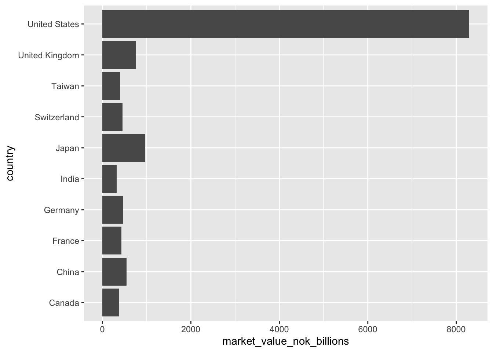
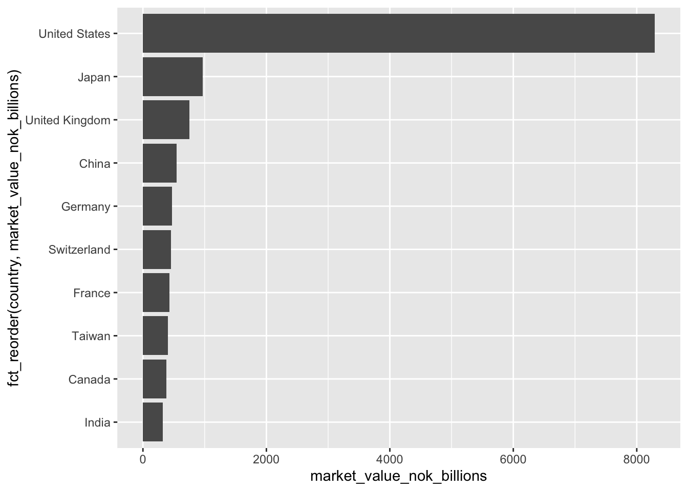
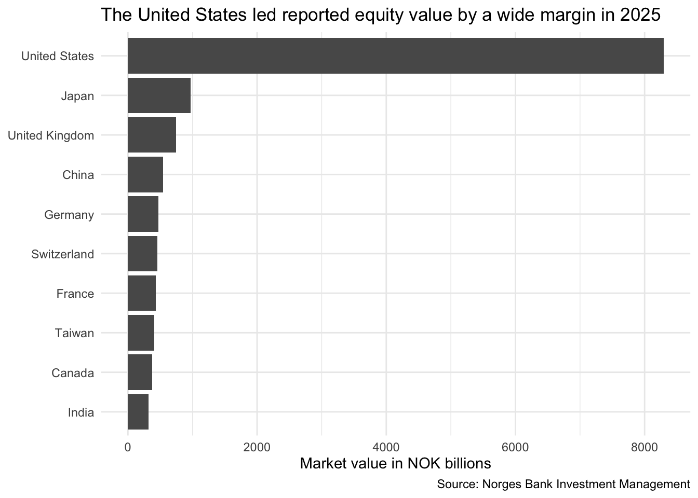
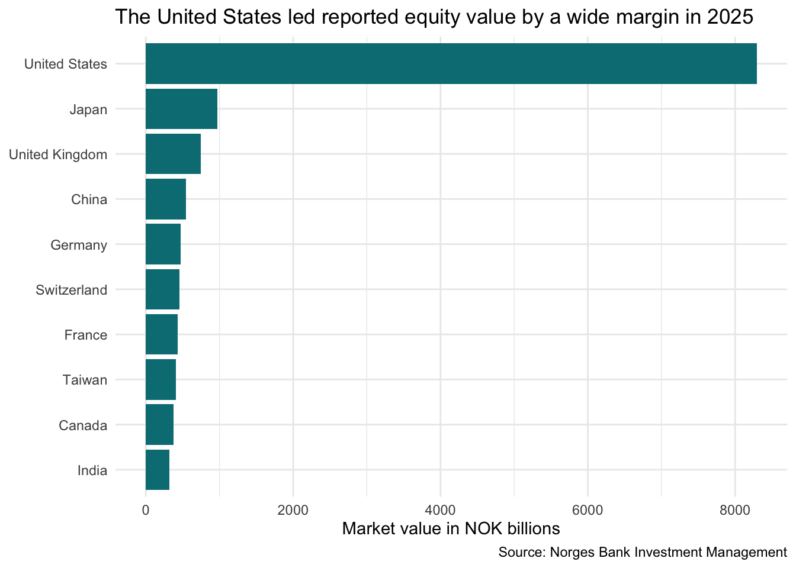
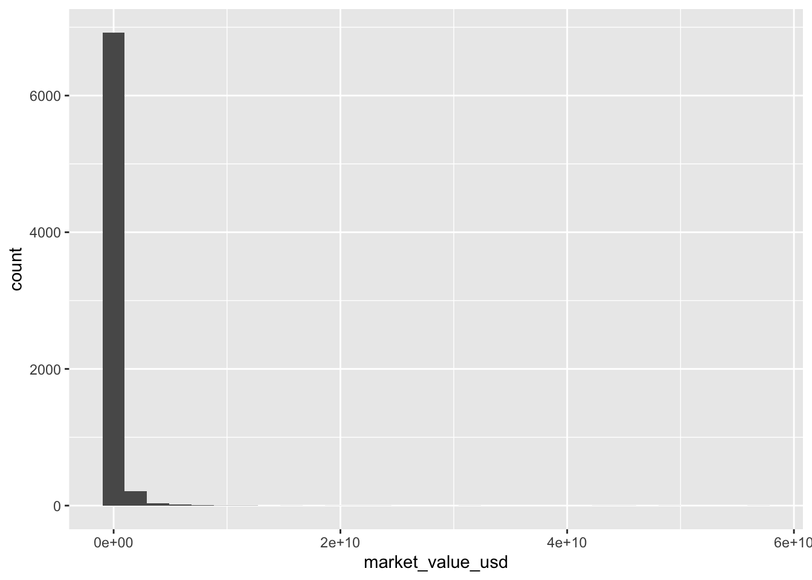
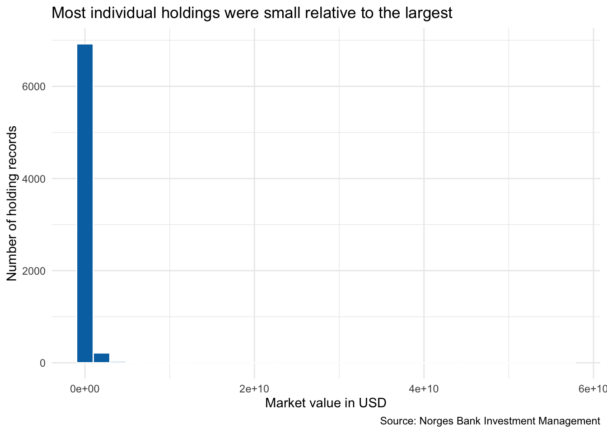
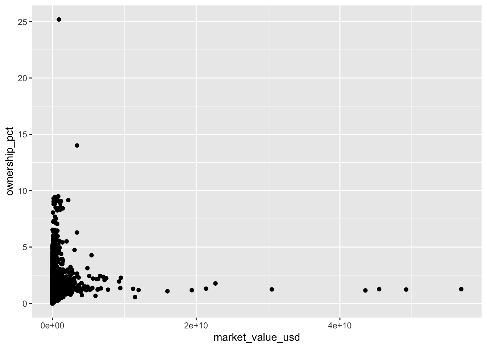

library(tidyverse)
gpfg <- read_csv("data/gpfg_5_years.csv")
gpfg_latest <- gpfg |>
filter(year == 2025)6 Basic Visualization
Part 4: Data Visualization
Chapter 5 calculated and checked several findings. We will now turn those tables into charts. Every chart begins with a reporting question and a plan; appearance comes later.
6.1 Learning objectives
By the end of this chapter, you should be able to:
- choose a chart based on a reporting question;
- identify which columns belong on the x- and y-axes;
- decide whether color or size needs to represent another variable;
- build a chart from a basic version to a labelled, styled version;
- explain what one visual mark represents; and
- distinguish a chart’s data mappings from its appearance settings.
6.2 A question-to-chart workflow
Use the same sequence every time:
- State the reporting question.
- Identify the columns needed to answer it.
- Calculate and inspect the table that will be plotted.
- Decide which column belongs on x, y, color, or size.
- Make the simplest working plot.
- Check what each bar, point, or line represents.
- Add labels and a source.
- Add color and a theme only when they improve communication.
The chart does not replace the analysis. It displays a result that should already be visible in a checked table.
Continue in the same project
Open djr.Rproj and create 06-basic-visualization.Rmd. Reuse the combined file created in Chapter 5. A ready-made gpfg_5_years.csv is available if needed.
6.3 Show a trend with a line chart
We will develop the first chart slowly so that every addition is visible.
Step 1: state the question
How did the total reported market value of the equity holdings change from 2021 through 2025?
Step 2: identify the columns
The source table contains many holdings per year. The question needs:
| Column | Role in the question |
|---|---|
year |
Time |
market_value_nok |
Measure to add within each year |
Step 3: prepare and inspect the table
Reuse the group-and-summarise pattern from Chapter 5:
annual_summary <- gpfg |>
group_by(year) |>
summarise(market_value_nok = sum(market_value_nok)) |>
arrange(year) |>
mutate(market_value_nok_trillions = market_value_nok / 1000000000000)
annual_summaryOne row now represents one year. The value in trillions is the same measure expressed in a unit that will be easier to label.
Step 4: plan the visual roles
| Visual role | Column | Why? |
|---|---|---|
| X-axis | year |
Time has a meaningful order |
| Y-axis | market_value_nok_trillions |
The value changes vertically |
| Color | None | We are showing only one series |
| Size | None | The line position already represents the value |
Do not add a variable to color or size simply because ggplot2 allows it.
Step 5: make the basic plot
ggplot() receives the table. aes() maps columns to visual roles, and geom_line() draws the selected geometry:
trend_plot <- annual_summary |>
ggplot(
aes(
x = year,
y = market_value_nok_trillions
)
) +
geom_line()
trend_plot
This is already a complete plot. One position on the line represents the total reported value for one annual snapshot.
Step 6: show the observed years
Add points as another layer. The earlier line remains unchanged:
trend_plot <- trend_plot +
geom_point()
trend_plot
The points remind readers that the data contain five observed annual values; the line connects them.
Step 7: add labels
trend_plot <- trend_plot +
labs(
title = "Reported equity value increased from 2021 to 2025",
subtitle = "Year-end holdings in nominal Norwegian kroner",
x = "Year",
y = "NOK trillions",
caption = "Source: Norges Bank Investment Management"
)
trend_plot
The labels state the period, measure, unit, and source. The title describes a visible pattern without calling the change a return.
Step 8: add a theme
trend_plot <- trend_plot +
theme_minimal()
trend_plot
theme_minimal() changes presentation, not the underlying values.
Step 9: make deliberate color choices
For the finished version, use blue for the line and orange for the observed points:
trend_final <- annual_summary |>
ggplot(
aes(
x = year,
y = market_value_nok_trillions
)
) +
geom_line(color = "#0072B2", linewidth = 1) +
geom_point(color = "#D55E00", size = 2.5) +
labs(
title = "Reported equity value increased from 2021 to 2025",
subtitle = "Year-end holdings in nominal Norwegian kroner",
x = "Year",
y = "NOK trillions",
caption = "Source: Norges Bank Investment Management"
) +
theme_minimal()
trend_final
Here color and size are outside aes(). They set a fixed appearance and do not represent additional columns, so the chart does not need a legend.
A line does not explain the change
The values can change because of prices, exchange rates, purchases, sales, or changes in the reported portfolio. The chart shows the pattern, not its cause.
6.4 Show a ranking with a bar chart
Now repeat the workflow more quickly.
Question and columns
Which investment markets had the largest total reported values in 2025?
| Column | Role |
|---|---|
country |
Category being compared |
market_value_nok |
Measure added within each country |
Prepare the table
top_countries <- gpfg_latest |>
group_by(country) |>
summarise(market_value_nok = sum(market_value_nok)) |>
arrange(desc(market_value_nok)) |>
slice_head(n = 10) |>
mutate(market_value_nok_billions = market_value_nok / 1000000000)
top_countriesOne row represents one investment market.
Plan the visual roles
| Visual role | Column | Why? |
|---|---|---|
| X-axis | market_value_nok_billions |
Bar length represents the amount |
| Y-axis | country |
Horizontal bars leave room for labels |
| Color | None | The ranking does not require another group |
| Size | None | Bar length already represents magnitude |
Begin with the basic plot
country_plot <- top_countries |>
ggplot(
aes(
x = market_value_nok_billions,
y = country
)
) +
geom_col()
country_plot
geom_col() uses values that we already calculated. One bar represents one market, and its length represents total market value.
Order the categories
The table is sorted, but categorical axes have their own order. fct_reorder() orders the country labels by the plotted value:
country_plot <- top_countries |>
ggplot(
aes(
x = market_value_nok_billions,
y = fct_reorder(country, market_value_nok_billions)
)
) +
geom_col()
country_plot
Add communication layers
country_plot <- country_plot +
labs(
title = "The United States led reported equity value by a wide margin in 2025",
x = "Market value in NOK billions",
y = NULL,
caption = "Source: Norges Bank Investment Management"
) +
theme_minimal()
country_plot
The first chart taught every stage separately. Here we can add familiar label and theme layers together. For the finished version, repeat the checked chart with one deliberate fixed fill color:
country_final <- top_countries |>
ggplot(
aes(
x = market_value_nok_billions,
y = fct_reorder(country, market_value_nok_billions)
)
) +
geom_col(fill = "#007C83") +
labs(
title = "The United States led reported equity value by a wide margin in 2025",
x = "Market value in NOK billions",
y = NULL,
caption = "Source: Norges Bank Investment Management"
) +
theme_minimal()
country_final
The fill is outside aes() because all bars belong to one ranking rather than representing separate groups.
6.5 Describe a distribution with a histogram
Question and visual plan
How were individual holding values distributed in 2025?
This question uses the numeric market_value_usd column. A histogram maps it to x, divides its values into ranges called bins, and counts the observations in each range. It does not require a y column from the source table.
ggplot(gpfg_latest, aes(x = market_value_usd)) +
geom_histogram()
Most holdings are small relative to a few very large holdings. This is a right-skewed distribution. The basic chart reveals the problem clearly even though the smaller observations are crowded together. Chapter 7 will add a log scale and compare distributions across groups.
Add labels and a simple fixed color only after reading the basic result:
ggplot(gpfg_latest, aes(x = market_value_usd)) +
geom_histogram(fill = "#0072B2", color = "white") +
labs(
title = "Most individual holdings were small relative to the largest",
x = "Market value in USD",
y = "Number of holding records",
caption = "Source: Norges Bank Investment Management"
) +
theme_minimal()
6.6 Examine a relationship with a scatterplot
Question and visual plan
Did market value and ownership percentage tend to vary together in 2025?
| Visual role | Column |
|---|---|
| X-axis | market_value_usd |
| Y-axis | ownership_pct |
| Color | None initially |
| Size | None initially |
Both variables are numeric, so begin with a scatterplot:
ggplot(
gpfg_latest,
aes(
x = market_value_usd,
y = ownership_pct
)
) +
geom_point()
One point represents one holding. A visible relationship does not show that one variable caused the other. Chapter 7 will address overlapping points, skewed values, and comparisons among regions.
6.7 Choose a basic chart from the question
| Question | Useful starting chart |
|---|---|
| How did a measure change over ordered time? | Line chart |
| Which categories have the largest calculated values? | Bar chart with geom_col() |
| How is one numeric column distributed? | Histogram |
| Do two numeric columns vary together? | Scatterplot |
The starting chart should be simple enough that students can explain every mapping and every mark.
6.8 Practice
Choose either an industry comparison or a 2024 country ranking. Complete the full workflow:
- write the reporting question;
- list the columns needed;
- prepare and inspect the table;
- decide what belongs on x and y;
- make the basic plot;
- explain what one mark represents;
- add labels and a source; and
- add one theme or fixed-color choice.
6.9 Takeaways
| Function or idea | What it does |
|---|---|
ggplot(data) |
Starts a chart with a table |
aes() |
Maps data columns to visual roles |
geom_line() |
Connects values across an ordered axis |
geom_point() |
Draws observations as points |
geom_col() |
Draws bars from values already calculated |
geom_histogram() |
Displays the distribution of a numeric column |
fct_reorder() |
Orders category labels by a numeric value |
labs() |
Adds titles, axis labels, and a source |
theme_minimal() |
Applies a simple visual theme |
Setting outside aes() |
Gives every mark a fixed appearance |
ggplot2 is a larger universe
The examples teach a small, reusable foundation. The official Introduction to ggplot2, theme reference, and ggplot2 book provide more options when a project needs them.